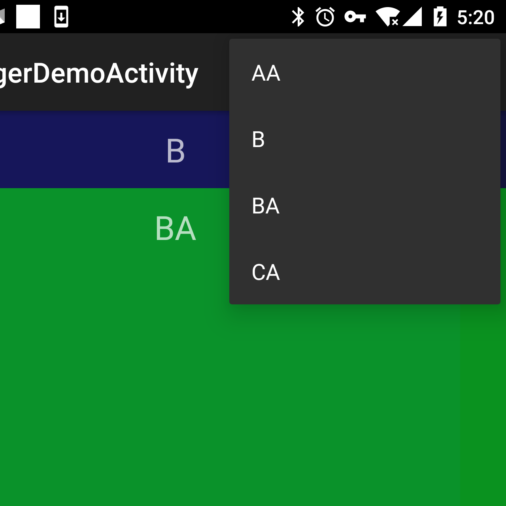
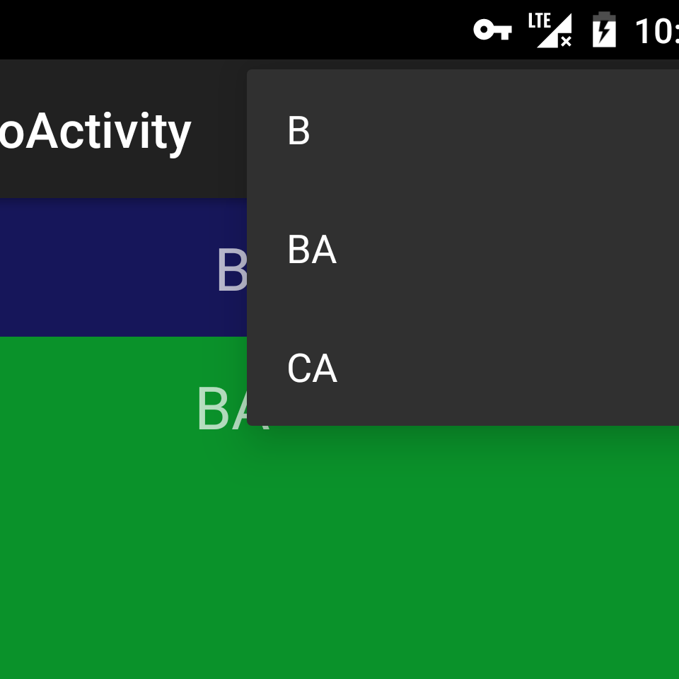
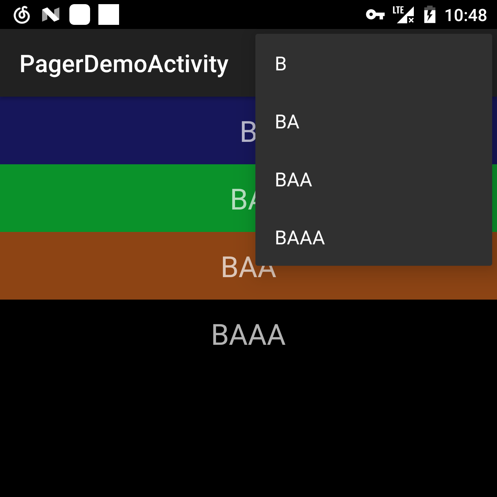

以下图嵌套的 ViewPager 为例，它是一个两层嵌套的 ViewPager，也就是说 ViewPager 里面是 Fragment ，每个 Fragment 里面又是一个 ViewPager。在下面的例子中，每个 Fragment 都有一个相同名字的菜单项，可以看到不在当前页显示的 Fragment 它的菜单项也显示出来了。用户滑动到 B ，ViewPager 能正确处理第一层的菜单，显示 B 的时候同时预加载 A、C 两个 Fragment，而菜单里只显示 B 的菜单项。到第二层就有问题了， BA 是第二层当前的 Fragment，它的菜单项也能显示出来，这没问题。但却多出来 AA 和 CA，这是因为 ViewPager 预加载了 A，A 里面的 ViewPager 把 AA 当成是当前 Fragment，把它的菜单项也显示出来了。CA 也是同样道理。

决定是否显示菜单的代码是由 PagerAdapter#setPrimaryItem 实现的，属于主项（primary item）的 fragment 才会显示菜单项。以 FragmentPagerState 为例，具体代码如下:
Fragment fragment = (Fragment)object;
if (fragment != mCurrentPrimaryItem) {
if (mCurrentPrimaryItem != null) {
mCurrentPrimaryItem.setMenuVisibility(false);
mCurrentPrimaryItem.setUserVisibleHint(false);
}
if (fragment != null) {
fragment.setMenuVisibility(true);
fragment.setUserVisibleHint(true);
}
mCurrentPrimaryItem = fragment;
}
AA、CA 的显示就很好理解了，因为它们各自是 A 和 C 的主项（primary item），所以都调用了 setMenuVisibility(true)。
要修复这个问题，一开始想到的是覆盖父 fragment 的 setMenuVisibility 方法，把值传递到当前子 fragment
@Override public void setMenuVisibility(boolean menuVisible) {
if (isAdded() && getChildFragmentManager().getFragments() != null) {
Fragment f = getChildFragmentManager().findFragmentByTag(
"android:switcher:" + mPager.getId() + ":" + mPager.getCurrentItem());// 不支持 FragmentStatePagerAdapter
if (f != null) {
f.setMenuVisibility(menuVisible);
}
}
super.setMenuVisibility(menuVisible);
}
这样从 A 滑到 B 时，AA 能隐藏了。但仍然不能解决问题，从 A 滑到 B 时离屏加载 C，并设置 C 的 MenuVisibility 为 false。FragmentPagerAdapter 几次 setMenuVisibility 都在 finishUpdate 之前，所以此时 C 还未添加到 Activity，CA 更不存在。等到 CA 加载时，已经不会再触发 C 的 MenuVisibility 了。

考虑自定义 FragmentPagerAdapter，主项（primary item）的 fragment 的 menuVisibility 同步父 Fragment 的状态，mParent 是适配器构造函数传入的 ViewPager 宿主 Fragment。
@Override public void setPrimaryItem(ViewGroup container, int position, Object object) {
super.setPrimaryItem(container, position, object);
if (mParent != null) ((Fragment) object).setMenuVisibility(mParent.isMenuVisible());
}
这样的问题是，从 A 滑到 B 时，只是根 ViewPager 的当前主项（primary item）发生变化，A 适配器和 B 适配器的主项不会发生变化，所以 setPrimaryItem 不会被触发，AA 的菜单仍然可见，而 BA 的菜单则仍然不可见。
幸运的是把修改两个地方合并起来，这样就覆盖了各种可能了。但未免过于繁琐，把问题重新整理一遍，建立模型，才是优雅的解决方法：
- 给适配器（Adapter）引入是否可视（visible)属性，不再是主项（primary item）的 Fragment 就显示菜单，而是只有当前适配器是可视的情况下才可以显示菜单。
- 是否可视的递归定义：父适配器（管理宿主 Fragment 的 Adapter）是可视的 ，且宿主 Fragment 是主项，适配器才是可视的。
- 父适配器的可视状态和宿主 Fragment 主项状态发生改变，要传递到其子适配器。
- 子适配器初始化要正确初始化他的可视状态。
这样就能设计一个新的 PagerAdapter，把棘手的问题都放在 PagerAdapter 来做。
要实现第三点，适配器需要获得指向其子适配器的引用，适配器是 Fragments 的管理者，这些 Fragments 又是子适配器的宿主，只要让 Fragment 实现接口来获取其内部的适配器便行。
public interface AdapterHolder {
HierarchyFragmentPagerAdapter getAdapter();
}
/**
* 通知子 Adapter（宿主是 holder） ，父 Adapter(当前的 Adapter) visible 发生了变化。
* 或者通知子 Adapter，父 Adapter 希望它的 visible 发生变化
*/
private void notifyChildVisibleChanged(boolean visible, Fragment holder) {
if (holder instanceof AdapterHolder) {
HierarchyFragmentPagerAdapter adapter = ((AdapterHolder) holder).getAdapter();
if (adapter != null) {
adapter.setVisible(visible);
}
}
}
没有继承 AdapterHolder 都会被适配器当成没有子 Adapter。
相比第三点，第四点反而更麻烦。在 finishUpdate 之前，Fragment 是不知道它在树中的位置的。这时如果尝试用 getParentFragment() 是返回空，
Fragment parent = fragment.getParentFragment();
if (parent == null || !(parent instanceof AdapterHolder)) {
// 拿不到 parent 有两种情况
// Adapter 在根 Pager 里
// 也有可能是第一次初始化，当前 Fragment 还未和其父 Fragment 建立链接
setVisible(isVisible());
} else {
// 否则，只有父 Adapter 是 visible primary，当前 primary item 才可能是 visible primary.
setVisible(((AdapterHolder) parent).getAdapter().isVisible());
}
为了能够正确初始化，需要在构造函数做个 hack。
public HierarchyFragmentPagerAdapter(PagerAdapter adapter, AdapterHolder holder) {
mAdapter = adapter;
mVisible = true;
if (holder != null) {
if (holder instanceof Fragment) {
// 一个 hack，初始化 的 visible 状态
// holder 不是 Fragment 表示 Adapter 为根 Adapter
// menu visible 为 true，便断言宿主 Fragment 是 primary item.
mVisible = ((Fragment) holder).isMenuVisible();
}
}
}
剩下的便没什么，鉴于 PagerAdapter 有两个, FragmentPagerAdapter 和 FragmentStatePagerAdapter。所以适配器的设计便用代理模式比较合适，实现起来比想象中的简洁，用起来也简单，只需将实际的 PagerAdapter 外面包一层 HierarchyFragmentPagerAdapter 就行，具体的代码见：HierarchyFragmentPagerAdapter
